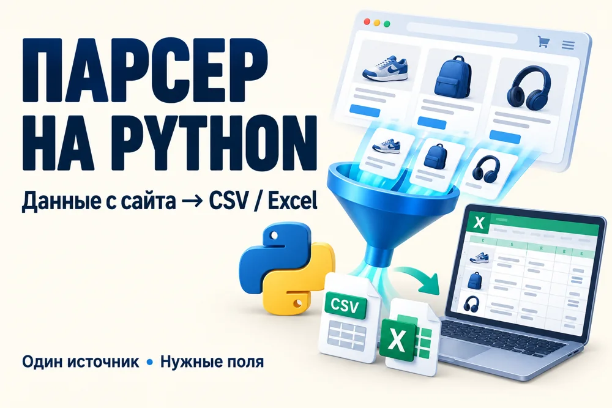
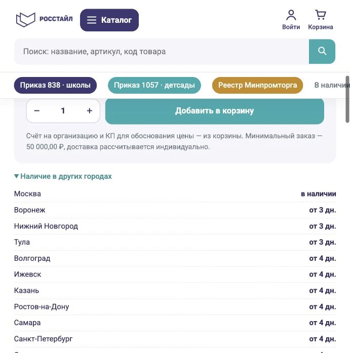

HTML-страница
Адаптивная страница услуги до 5 блоков.
от 2 000 ₽Ориентир: 3–5 днейЧто входит и опции →САЙТЫ · БОТЫ · ДАННЫЕ
Помогаю торговым компаниям, поставщикам и небольшому бизнесу: создаю сайты, подключаю загрузку товаров, цен и остатков, настраиваю ботов и обработку таблиц.
Обсудить мою задачу ↗Посмотреть проекты ↓ЧЕМ МОГУ ПОМОЧЬ
Выберите задачу: в каждой услуге есть цена, состав работы и дополнительные опции. Сроки ниже — ориентиры для базового объёма после получения материалов.
Адаптивная страница услуги до 5 блоков.
от 2 000 ₽Ориентир: 3–5 днейЧто входит и опции →До 5 HTML-страниц до 5 блоков на каждой.
от 5 000 ₽Ориентир: 5–10 днейЧто входит и опции →Каталог и корзина: до 30 товаров и 5 категорий.
от 15 000 ₽Ориентир: 10–14 днейЧто входит и опции →Подключение одного разрешённого источника данных.
от 5 000 ₽Ориентир: 3–7 днейЧто входит и опции →Одна задача обработки CSV Excel или файлов.
от 2 000 ₽Ориентир: 2–4 дняЧто входит и опции →
Один открытый раздел до 500 записей и 5 полей.
от 3 000 ₽Ориентир: 3–5 днейЧто входит и опции →Настройка запуска готового скрипта на сервере.
от 2 000 ₽Ориентир: 1–2 дняЧто входит и опции →Подготовка файла импорта до 300 товаров.
от 1 500 ₽Ориентир: 2–3 дняЧто входит и опции →Проверка до 1 000 строк: артикулы цены остатки.
от 1 000 ₽Ориентир: 2–3 дняЧто входит и опции →Таблица из 3 предложений по одному товару.
от 1 000 ₽Ориентир: 2–3 дняЧто входит и опции →Один рабочий процесс по вашим данным до 3 страниц.
от 1 000 ₽Ориентир: 2–3 дняЧто входит и опции →Оформление ваших материалов в Word и PDF.
от 1 000 ₽Ориентир: 2–3 дняЧто входит и опции →Заголовок и описание одного товара для Ozon.
от 500 ₽Ориентир: 2–3 дняЧто входит и опции →20 ответов покупателям по вашим материалам.
от 1 000 ₽Ориентир: 2–3 дняЧто входит и опции →Обновление текста контактов или изображений.
от 500 ₽Ориентир: 2–3 дняЧто входит и опции →До 60 статей и 300 товарных ссылок. Таблица ошибок и приоритетов.
от 1 500 ₽Ориентир: 2 дняЧто входит и опции →ОПЫТ В СОБСТВЕННЫХ ПРОЕКТАХ
источника загрузки товаров, цен и остатков в собственном магазине
городов для расчёта наличия и сроков поставки
уведомления на заявку в боте с автоматической остановкой по лимиту
Это объём реализованных функций в моих проектах. Примеры интерфейсов и ссылки — ниже.
СОБСТВЕННЫЕ ПРОЕКТЫ
Каталог, корзина, кабинет учреждения, КП и счета на собственном PHP-сайте.
Задача: собрать каталог и оформление заказов для учреждений.
Решение: собственный PHP-сайт с поиском, корзиной, кабинетом, КП и счетами.
Результат: покупатель выбирает товары и формирует документы в одном месте.

Автоматическая загрузка товаров, цен и остатков из разрешённых API и файлов.
Задача: обновлять каталог без ручного переноса каждой цены.
Решение: загрузка из разрешённых API и файлов по расписанию.
Результат: цены и наличие попадают в каталог, покупатель видит сроки и остатки по городам. На экране — результат в карточке товара.
Уведомления о свободном времени записи с датой, временем и лимитом сообщений.
Задача: следить за появлением свободного времени записи.
Решение: бот проверяет источник и отправляет уведомление с датой и временем.
Результат: пользователь получает сообщение, может остановить уведомления и перейти к самостоятельной записи.
ДАВАЙТЕ ЗНАКОМИТЬСЯ
Работаю с товарами, поставщиками и закупками для учреждений. Знаю, сколько ручной работы скрывается за прайсами, остатками, коммерческими предложениями и счетами.
Для своей работы создала интернет-магазин и настроила обновление каталога. Теперь помогаю другим превратить похожие задачи в удобные сайты, скрипты и Telegram-ботов. У меня образование в области систем информатики, а также товароведения и экспертизы технически сложных товаров.
Со мной можно обсуждать задачу обычными словами. Вместе определяем результат, я показываю готовую работу и передаю файлы с понятной инструкцией.
КАК МЫ РАБОТАЕМ
Определяем объём, исходные материалы и ожидаемый результат.
Согласуем стоимость, срок и что именно входит в работу.
Вы смотрите результат, проверяем согласованные сценарии.
Файлы, исходный код и инструкция по использованию.
НАЧНЁМ С ВАШЕЙ ЗАДАЧИ
Напишите, как сейчас устроена работа и какой результат нужен. Можно приложить пример сайта или файла.
Telegram @lenvin7 ↗Написать на email ↗lenvin7@gmail.com